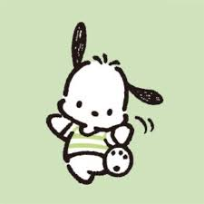

Pochacco
Little Twin Stars
My Melody
Kuromi
Hello Kitty
Cinnamoroll
Pompompurin
Pochacco

Facts
- Pochacco's name means "pocha pocha," which means "chubby"
- Pochacco has black floppy ears but no visible mouth
- Pochacco is sporty, curious, energetic, and playful
- He has 2 best friends named Choppi and Mogu and has a pet duck named Peele
- Pochacco's birthday is February 29, making him a leap year baby
- His zodiac sign is Pisces
Pochacco is a popular character created by Sanrio, the same company behind Hello Kitty. He is a white dog with black floppy ears and a blue beret on his head. Pochacco is known for his love of sports and being energetic. Many people find him cute and endearing, making him a beloved character among fans of Sanrio. His cheerful personality and playful nature make him a favorite among children and adults alike.
Click on the link to take a Sanrio based quiz
Sanrio Quiz!